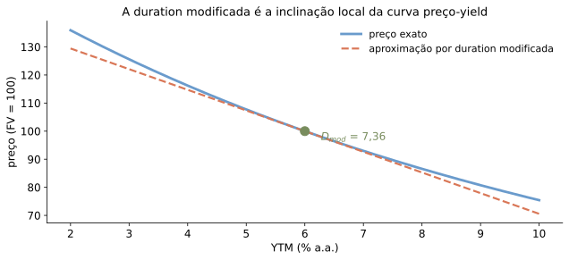
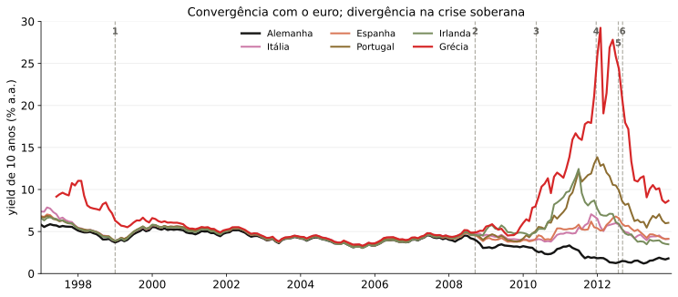

| métrica | valor |
|---|---|
| YTM de 10 anos em 17/06/2026 | 4,44% |
| Preço do título | 96,51 |
| Duration modificada | 8,12 anos |
| Efeito aproximado de +1 p.p. no yield | -8,1% |
Avaliando Títulos de Dívida
Felipe Iachan
Terminologia
- Títulos de dívida: soberanos, corporativos, debêntures
- Valor de face, nocional, principal
- Cupom e taxa de cupom
- Maturidade, vencimento, prazo
- Preço, yield, spread
Da Aula 3 para títulos
Um título é um pacote de fluxos de caixa.
\[P = \sum_{t=1}^{T} \frac{CF_t}{(1+r_t)^t}\]
- Preço: valor presente dos pagamentos prometidos
- Yield: taxa que resume esse preço em um número
- Risco: juros, prazo, cupons e crédito
Título Típico
- Valor de face
- Cupom
- Taxa de cupom
- Data de vencimento

Título ao portador do Estado da Luisiana (EUA), 1879, com cupons destacáveis anexados. Domínio público (direitos autorais expirados) — Wikimedia Commons, arquivo “BabyBondLA.jpg”.
Exemplo
Assuma que estamos em 15 de maio de 2010 e que o Tesouro dos EUA acaba de emitir um título com vencimento em maio de 2015.
| Item | Dado |
|---|---|
| Valor de face | US$ 1.000 |
| Cupom anual | 2,2% |
| Frequência dos cupons | semestral |
| Classificação | nota do Tesouro (maturidade original: 5 anos) |
| Primeiro cupom | 15/11/2010 |
| Pergunta | fluxos até a maturidade |
Exemplo (continuação)
O cupom semestral é
\[CPN = \frac{2{,}2\% \times 1.000}{2} = \text{US\$ }11\]
São 10 fluxos semestrais; o último combina cupom e principal.
Título Zero-Cupom
- Não paga cupom antes do vencimento.
- Também chamado de título de desconto puro.
- Exemplos: T-bills, LTN, Tesouro Prefixado sem cupom.
Yield to Maturity
Yield to maturity é a taxa constante que iguala o preço ao valor presente dos pagamentos.
\[P = \frac{FV}{(1+YTM)^n}\]
No exemplo:
\[YTM = \frac{100.000}{96.618{,}36} - 1\]
Rentabilidades em diferentes vencimentos
Problema. Suponha que títulos de dívida de cupom zero estejam sendo negociados pelos preços abaixo, para cada US$ 100 de valor de face.
Determine a rentabilidade até o vencimento correspondente a cada um deles.
| 1 ano | 2 anos | 3 anos | 4 anos | |
|---|---|---|---|---|
| Preço | US$ 96,62 | US$ 92,45 | US$ 87,63 | US$ 83,06 |
O que o YTM resume
- Para um zero-cupom sem risco, o YTM é direto.
- Para título com cupons, ele é uma taxa única que resume muitos fluxos.
- Com venda antes do vencimento, reinvestimento incerto ou default, YTM não é retorno esperado.
Títulos com Pagamento de Cupons
Fórmula de Precificação com Cupons
Se o yield por período é \(y\),
\[P = CPN \times \underbrace{\frac{1}{y}\!\left(1 - \frac{1}{(1+y)^N}\right)}_{\text{fator de anuidade}} + \frac{FV}{(1+y)^N}\]
- Yield é definido para o período entre cupons.
- A cotação anual costuma usar APR.
- Dado o preço, achar o yield é resolver uma equação não linear.
Preço vs. Yield
- Títulos podem ser cotados pelo preço ou pelo yield.
- Um sempre determina o outro.
- Cupom = yield: título ao par.
- Cupom < yield: título com deságio.
- Cupom > yield: título com ágio.
Preço cai quando o yield sobe

Fatores Determinantes do Preço de Títulos
- Curva de juros e seus movimentos.
- Tempo até o vencimento.
- Estrutura dos pagamentos no tempo.
- Risco de crédito.
Brasil: os nomes mudam, a lógica é a mesma
| Instrumento | Fluxos relevantes |
|---|---|
| Tesouro Prefixado | principal no vencimento |
| Tesouro Prefixado com Juros Semestrais | cupons + principal |
| Tesouro IPCA+ | principal corrigido pela inflação |
| Debênture | cupons, principal e risco de crédito |
O preço sempre é valor presente de fluxos prometidos.
Curva de juros dos Treasuries

Fonte: CBOE/Yahoo Finance (^IRX, ^FVX, ^TNX, ^TYX), dados locais de 17/06/2026.
Movimentos de Juros

Exemplo de Berk & DeMarzo (2024), Cap. 6 — preços recomputados nativamente pela fórmula de precificação, não copiados do gráfico original.
A curva se move

Fonte: CBOE/Yahoo Finance, dados locais.
Tempo até o Vencimento

Título de 30 anos, cupom anual, YTM fixo em 5% a.a.: o zero-cupom sobe suavemente até o valor de face; os títulos com cupom sobem entre pagamentos e caem no valor do cupom em cada data de pagamento — todos convergem ao valor de face no vencimento.
Reconstrução ilustrativa do exemplo de Berk & DeMarzo (2024), Cap. 6, com cupom anual como hipótese explícita (o original não especifica a frequência de pagamento em texto).
Intuição: Juros, Cupom e Ganho de Capital
Relação fundamental:
\[(1+r) = \frac{c + p_{t+1}}{p_t}\]
Olhando para \(t = T-1\):
\[\left(1+r\right) = \frac{c + F}{p_t} = \left(\frac{c}{F} + 1\right)\frac{F}{p_t}\]
Logo, \(\dfrac{c}{F} < r \iff F > p_t\).
Intuição: Precificação em Tempo Contínuo
Em tempo contínuo, o preço do título satisfaz:
\[p(t) = F e^{-r(T-t)} + \int_t^T e^{-r(s-t)} c \, ds\]
Logo:
\[p(t) = F e^{-r(T-t)} + \frac{c}{r} - \frac{c}{r} e^{-r(T-t)}\]
Ágio ou deságio em tempo contínuo
Dividindo a última expressão por \(F\),
\[ \frac{p(t)}{F} =e^{-r(T-t)}+\frac{c/F}{r}\left[1-e^{-r(T-t)}\right]. \]
Subtraindo \(1\) e reorganizando os termos,
\[ \begin{aligned} \frac{p(t)}{F}-1 &=e^{-r(T-t)}-1 +\frac{c/F}{r}\left[1-e^{-r(T-t)}\right] \\ &=\left(\frac{c/F}{r}-1\right) \left[1-e^{-r(T-t)}\right]. \end{aligned} \]
Como \(1-e^{-r(T-t)}>0\) antes do vencimento,
\[ \boxed{ \frac{p(t)}{F}>1 \iff \frac{c/F}{r}>1 \iff \frac cF>r. } \]
O caminho até o valor de face
Derivando e colocando \(F\) em evidência,
\[ \dot p(t)=(rF-c)e^{-r(T-t)} =F\left(r-\frac cF\right)e^{-r(T-t)} =rp(t)-c \]
Como \(F>0\) e \(e^{-r(T-t)}>0\),
\[\boxed{\dot p(t)>0\iff \frac cF<r.}\]
- Cupom baixo: o preço sobe — ganho de capital
- Cupom igual ao yield: o preço fica constante
- Cupom alto: o preço cai — perda de capital
Cupom vs. yield em tempo contínuo
Preço em relação ao valor de face
- preço na emissão
- caminho do preço
- ganho de capital
Fluxo de cupom contínuo, T = 30 anos e F = 100. Sem saltos: o serrilhado surge apenas com cupons em datas discretas.
Estrutura dos Pagamentos no Tempo
Fluxos mais distantes tornam o preço mais sensível a mudanças na taxa.
Duration: tempo e sensibilidade
Macaulay (\(D_{Mac}\))
\[D_{Mac}=\frac{1}{P}\sum_{t=1}^{T} t\frac{CF_t}{(1+y)^t}\]
- Tempo médio ponderado dos fluxos
- Zero-cupom: \(D_{Mac}=T\)
- Com cupom: \(D_{Mac}<T\)
Modificada (\(D_{Mod}\))
\[D_{Mod}\equiv-\frac{1}{P}\frac{\partial P}{\partial y}=\frac{D_{Mac}}{1+y}\]
- Sensibilidade do preço ao yield
- \(\dfrac{\Delta P}{P}\approx -D_{Mod}\Delta y\)
- +1 p.p. no yield: queda aproximada de \(D_{Mod}\%\)
Nos gráficos a seguir, “duration” significa duration modificada. Em tempo contínuo, as duas noções coincidem.
Duration modificada como tangente

Sensibilidade a juros: duration modificada

Eixo y: \(D_{mod}\), onde \(\Delta P/P \approx -D_{mod}\Delta y\). Uma alta de 1 p.p. no yield implica perda aproximada de \(D_{mod}\%\) no preço.
Zero-cupom: \(D_{Mac}=T\), mas \(D_{mod}=T/(1+y)\); com \(y=6\%\), \(30/1{,}06=28{,}3\).
Exemplo: Treasury de 10 anos
Treasury hipotético: valor de face 100, cupom de 4% a.a., pagamento semestral.
Marcação a mercado
Quem carrega até o vencimento recebe o combinado. Quem vende antes recebe o preço do dia.
- No Tesouro Direto o risco de crédito é desprezível — o risco de mercado, não
- A taxa sobe, o preço unitário (PU) cai, e a perda é de quem vendeu antes
- Duration dá a primeira ordem dessa queda; convexidade, a segunda
\[\frac{\Delta P}{P}\;\approx\;-D_{Mod}\,\Delta y\;+\;\tfrac{1}{2}\,C\,(\Delta y)^2\]
A conta brasileira: base 252 dias úteis
\[PU=\sum_i \frac{CF_i}{(1+y)^{du_i/252}}\]
- \(du_i\): dias úteis até cada fluxo — não dias corridos, não meses
- \(y\) é taxa efetiva anual; o expoente \(du/252\) carrega todo o prazo
- NTN-F, cupom de 10% a.a.: \((1{,}10)^{1/2}-1 = 4{,}8809\%\) por semestre
- NTN-B, cupom de 6% a.a.: \((1{,}06)^{1/2}-1 = 2{,}9563\%\) — não é 3%
Marcação a mercado na prática
dias úteis até o vencimento
Marcação a mercado
- preço na compra (PU)
- preço após o choque
- variação
Sensibilidade
- duration (Macaulay)
- duration modificada
- convexidade (anos²)
Spreads e Risco de Crédito
- Títulos corporativos e soberanos podem não pagar integralmente.
- O spread compensa perdas esperadas, liquidez e aversão a risco.
- Mesmo fluxo prometido, preço menor quando o risco de crédito sobe.
Spreads corporativos
| Tomador | Rating | YTW | Spread |
|---|---|---|---|
| Governo dos EUA | — | 4,38% | 0,00 p.p. |
| Johnson & Johnson | AAA | 4,56% | 0,18 p.p. |
| Abbott Laboratories | A+ | 4,78% | 0,40 p.p. |
| Kraft Heinz | BBB | 4,94% | 0,56 p.p. |
| Carnival | BBB− | 5,56% | 1,18 p.p. |
| Paramount Global | BB+ | 6,81% | 2,43 p.p. |
| Goodyear | B+ | 8,09% | 3,71 p.p. |

Títulos em USD com vencimento em 2031. YTW; spread vs. Treasury CMT 5 anos = 4,38% (17/08/2026). Fontes: U.S. Treasury e TradingView/ICE.
Crise soberana europeia: yields de 10 anos
Eventos: 1 Euro (01/1999); 2 Lehman (15/09/2008); 3 SMP (10/05/2010); 4 LTROs (21/12/2011 e 29/02/2012); 5 Draghi (26/07/2012); 6 OMT (06/09/2012).
Avaliação de Risco
| Faixa | Interpretação |
|---|---|
| AAA, AA, A | grau de investimento alto |
| BBB | último degrau de grau de investimento |
| BB, B | grau especulativo |
| CCC ou abaixo | risco elevado de default |
Ratings resumem risco de crédito, mas não substituem preço, spread e análise própria.
Apêndice: convexidade
Com \(t_i=du_i/252\) e taxa efetiva anual \(y\),
\[ \begin{aligned} C &\equiv \frac{1}{P}\frac{\partial^2 P}{\partial y^2} =\frac{1}{P}\sum_i \frac{t_i(t_i+1)CF_i}{(1+y)^{t_i+2}}, \\[0.6em] \frac{\Delta P}{P} &\approx -D_{Mod}\,\Delta y +\frac{1}{2}C(\Delta y)^2. \end{aligned} \]
- Duration: inclinação local da curva preço–yield
- Convexidade: curvatura; importa mais para choques grandes
- O termo quadrático é igual para \(+\Delta y\) e \(-\Delta y\)
A variação total não é simétrica: o termo de duration muda de sinal.
Apêndice: cupom vs. yield
Nos instantes logo após cada pagamento de cupom, defina \(q\equiv c/F\) e \(n\equiv T-t\). Com \(r\) constante,
\[ p_t =c\frac{1-(1+r)^{-n}}{r}+F(1+r)^{-n} =F\left[\frac qr+\left(1-\frac qr\right)(1+r)^{-n}\right]. \]
Colocar \(F\) em evidência deixa a comparação entre taxa de cupom e yield diretamente visível.
Ágio ou deságio?
Subtraindo o valor de face,
\[ p_t-F =F\left(\frac qr-1\right)\left[1-(1+r)^{-n}\right]. \]
Como o segundo termo entre colchetes é positivo,
\[ \boxed{q>r\iff p_t>F,\qquad q<r\iff p_t<F.} \]
Cupom acima do yield implica ágio; cupom abaixo do yield implica deságio.
O preço caminha para o valor de face
De uma data de cupom para a seguinte,
\[ \begin{aligned} \Delta p_t &\equiv p_{t+1}-p_t \\ &=\left(F-\frac cr\right) \left[(1+r)^{-(n-1)}-(1+r)^{-n}\right] \\ &=\boxed{\frac{F}{(1+r)^n}\left(r-\frac cF\right)}. \end{aligned} \]
Portanto, \(\Delta p_t>0\iff c/F<r\): o deságio diminui com o tempo; no ágio, ocorre o inverso.
\(\Delta p_t\) compara preços ex-cupom, logo após pagamentos consecutivos.
Retorno total: cupom + ganho de capital
| Taxa de cupom \(c/F\) vs. yield \(r\) | Preço | Caminho até \(F\) |
|---|---|---|
| \(c/F<r\) | deságio: \(p_t<F\) | sobe |
| \(c/F=r\) | ao par | constante |
| \(c/F>r\) | ágio: \(p_t>F\) | cai |
\[1+r=\frac{c+p_{t+1}}{p_t}\]
- Cupom baixo: parte do retorno vem do ganho de capital
- Cupom alto: parte do cupom é compensada por perda de capital
O gráfico serrilhado inclui a acumulação entre pagamentos e a queda no pagamento do cupom; a tabela compara apenas datas ex-cupom.